|
“Robótica y Linux”.¡Innóvame!. CDTinternet.net. Enero-2005 |
|
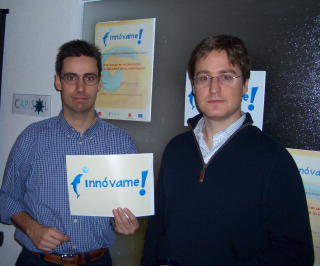 |
Título: “Robótica y Linux”
Evento: Jornadas de difusión de la innovación tecnológica. CDTinternet.net
Lugar: Locales del CDTinternet.net. Edificio Santo Domingo de Madrid. C/Jacometrezo 4, planta 8
Fecha: 21 de Enero de 2005
Ponentes:
Juan González Gómez (Universidad Autónoma de Madrid, UAM)
En esta charla de carácter divulgativo se muestra el funcionamiento de diferentes robots. En la primera parte se explican las motivaciones de los ponentes, que les han llevado a aplicar las ideas del software libre al hardware y a la robótica. A continuación se describe el robot “hola mundo”, realizado con las tarjetas Skypic y CT293, perfecto para iniciarse en el mundo de la robótica. Después se introducen los robots articulados y se hacen demostraciones de tres de ellos: “los ojos”, el robot ápodo Cube Revolutions y el perro robot Puchobot. En la segunda parte se muestran diferentes proyectos realizados en Ifara Tecnologías, relacionados con la visión y el control. Finalmente se enseña el funcionamiento del “Observer”, desarrollado en el Club de Robótica-Mecatrónica de la EPS-UAM, que se telecontrola desde un PC y envía imágenes por radio.
|
Descarga de la presentación |
|
innovame.sxi (3,9 MB) |
Presentación para OpenOffice 1.1.2 |
|
innovame.pdf (1,6MB) |
Presentación en PDF |
Se condecen permisos para usar, modificar y/o distribuir esta presentación, siempre que se mantenga esta nota.
Tarjeta Skypic, entrenadora para microcontroladores PIC de 28 pines.
Tarjeta ct293+. Control de motores y sensores.
Cuaderno técnico II, trucaje de los servos Futaba
Cuaderno técnico III. Servos Futaba 3003. Características, planos y modelo 3D.
Taller en la UAX. I taller de robótica celebrado en la universidad Alfonso X el Sabio, en Madrid.
Perro robot PUCHOBOT.
Robot Cube Revolutions
Robot ápodo Cube Reloaded (Versión anterior a Cube Revolutions)
La conferencia tuvo lugar el Viernes 21 de Enero en los locales del CDTinternet.net, situados en la planta 8 del edificion Santo Domingo, en Madrid, donde las vistas son magníficas!. Al fondo se puede ver el Palacio Real y parte de la Almudena.
|
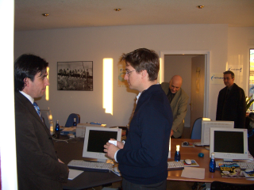 Andrés hablando con Nilo García, Responsable General de Crambo |
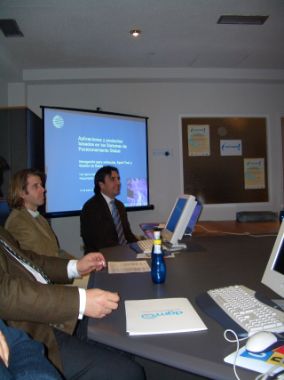 Nilo García, antes de comenzar su ponencia: "Nuevas aplicaciones y servicios basados en los Sistemas de Posicionamiento Global" |
|
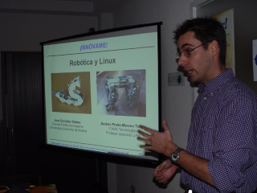 Juan, al comienzo de la charla |
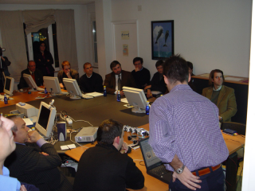 En la sala había una mesa muy grande, donde se pudieron mostrar perfectamente todos los robots |
|
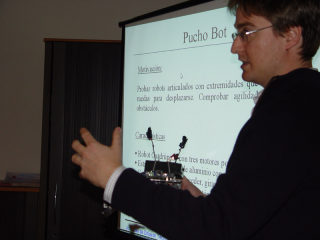 Andrés, explicando Puchobot |
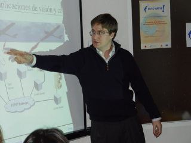 Andrés, hablando sobre los proyectos que hacen en Ifara |
|
|
|---|
|
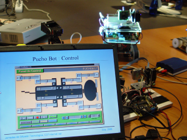 La aplicación de control de Puchobot, en Linux |
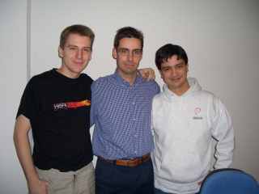 Carlos (Tuxer), Juan y Javi (Madrid Wireless). ¡Yo quiero una sudadera como la de Javi! :-) |
|
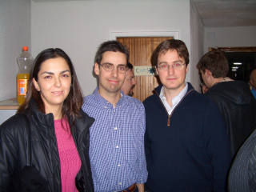 De izquierda a derecha: Mercedes, Juan y Andrés
|
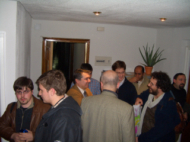 Andrés, hablando con los organizadores y otros ponentes. |
A toda la gente del CDTinternet , Paco, Óscar, Carlos, Ruth, Paula y Juan Fer, por invitarnos a las jornadas y tratarnos tan bien. ¡Muchas gracias!
A Óscar Espiritusanto por las fotos. ¡Muchas gracias!
A Carlos Migueláñez (Tuxer), por haber contado con nosotros para la participación en estas Jornadas.¡Muchas gracias!
1/Enero/2005: Añadido enlace a Cube Revolutions
25/Enero/2005: Publicada información en esta web